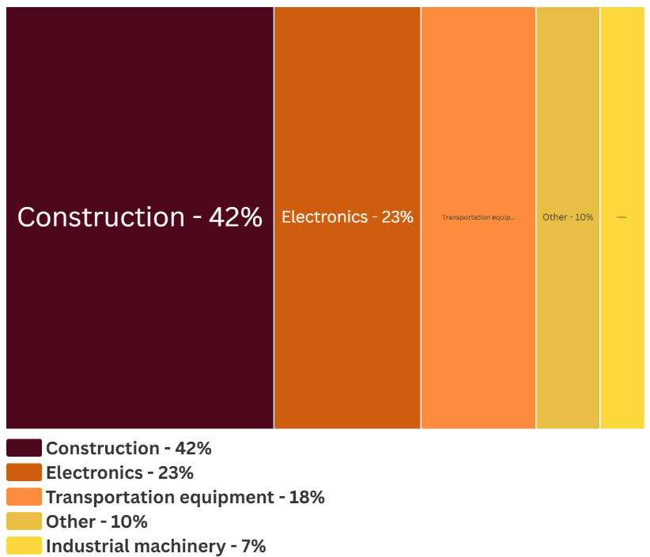
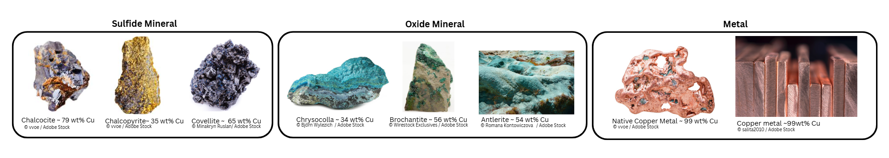

Copper is one of a handful of other metallic elements that can occur as pure metal that can be taken straight from the ground. The fact that copper can be mined with minimal refinement has allowed the metal to be used as far back as 8000 B.C.
Today copper is the third most consumed metal in the world because it is a highly conductive and ductile material. There are two types of copper deposits. One is a type of igneous rock called a porphyry deposit and hosts 2/3 of the copper sourced globally. The other is a sedimentary deposit and makes up ¼ of where copper can be mined from. These sedimentary copper deposits host 60% of the world's cobalt. Both deposits host oxide and sulfide copper ores. The largest producers of copper concentrate, the material from which copper metal is made, are Chile, United States, Indonesia, and Australia. The country with the largest copper smelters globally is China.
Regardless of the type of deposit, the most common way to mine copper is through open-pit mining which is a surface mining technique that uses drills, explosives, and excavators to unearth the copper ore. Once the copper ore is loose, the rock is hauled to a processing site. Although both ore types are ground before they undergo further separation processes, after this point copper oxide and copper sulfides ores are treated differently.
Processing Copper Oxide Ore
1. Heap Leaching: Ground rock to Copper Concentrate
The copper oxide that has been crushed is heaped in an impermeable basin where dilute sulfuric acid is poured over the heap. The heap is sloped such that as the acid percolates through the heap. Copper ions dissolve into the acid and eventually collects in a pool. The liquid is recovered and sent to subsequent separation steps.
2. During solvent extraction, the copper-containing concentrate is mixed with an organic acid (frequently an aromatic ketone or aldehyde-based reagent like hydoxyoxime) that selectively binds copper ions, dissolving them into the organic part of the mixture. This organic phase is fed into another process called a stripping unit where a strong acid like sulfuric acid 'strips' the copper ions from the organic phase into an aqueous solution. This solution is the electrolyte in the subsequent electrowinning step that's used to recover copper metal!
3. Electrowinning: Metal Recovery
During electrowinning, direct current is passed through the copper electrolyte. The dissolved copper ions reduce and precipitate as a solid onto a conductive substrate often made of stainless steel. The plated copper metal is mechanically removed off the substrate in a sheet. This can happen because copper is ductile, compared to cobalt which in similar processes is mechanically removed and recovered in smaller, fractured sizes. The market price of copper metal supersedes the concentrates from which the metal was refined.
Processing Copper Sulfide Ore
1. Froth Flotation: Separate Copper Sulfide Particles from Ore
Ground copper sulfide ore is further milled into fine sand. The fine sand is mixed in an aqueous solution. A hydrophobic chemical reagent, often potassium ethyl xanthate, is subsequently added to selectively bind to the copper sulfide particles. The slurry is fed into the froth flotation unit where pipes at the bottom of the tank blow air. The air bubbles force the copper bonded to the hydrophobic reagent to rise to the surface. This metallic froth is skimmed off the surface of the mixture and sent to a thickening unit.
2. Thickening: Synthesize Copper-rich Concentrate
A thickener in this process is a cylindrical vat with a stirring rod that filters out the water from the copper rich concentrate synthesized in the froth flotation step. The dewatered concentrate is exported by rail, truck and/or ship to smelters.
3. Metal Smelting: Transform Copper Concentrate to Copper Metal
The filtered copper concentrate is sent for smelting. Smelters transform metal rich powders exported from mining projects into metal products. The concentrate is not pure copper and has iron and sulfur impurities. This concentrate is melted at temperatures above 1000 °C and is poured into a slag-settling furnace. The furnace keeps the mixture in a liquid form while allowing a mixture of copper, sulfur, iron, and silica to collect at the bottom of the tank. This collection of solid material is called matte and contains roughly 60 wt % copper. This matte is heated to above 1200 °C in another furnace, to burn off sulfur and iron impurities, giving a yellow product called producing 'blister copper' that contains 98 wt% copper. This blister copper is sent to its final heated separation step, anode smelting, that burns off the oxygen from the metal mixture. This process results in 99% copper.
3. Electrolysis: Recover 99.99 wt % Copper Metal
To achieve 99.99 wt % copper metal, 99 wt % copper sheets are suspended in a copper sulfate and sulfuric acid solution. These are sandwiched between pure (99.99 wt %) copper sheets. When electric current is passed through the system, copper cations migrate from the impure electrode to the pure one. This process takes about two weeks but yields a sheet of copper that can be made into copper metal goods like wires. These metal goods are sold for a higher price than the copper concentrate from which they are synthesized.
What is copper used for?

Figure 1: Industrial uses of copper. Data source: USGS National Minerals Information Center, 2025.
What do some copper minerals look like?

Figure 2: Different types of copper containing materials.
Where are copper mineral deposits?

Figure 3: Global copper reserves as reported by the USGS. Data is from https://mrdata.usgs.gov/general/map-global.html
Who imports copper?
Click on the blue bubbles to see where copper is imported from.
Where is copper mined?
Scroll with your mouse or touchpad over the tagged locations on the map to zoom in/out.